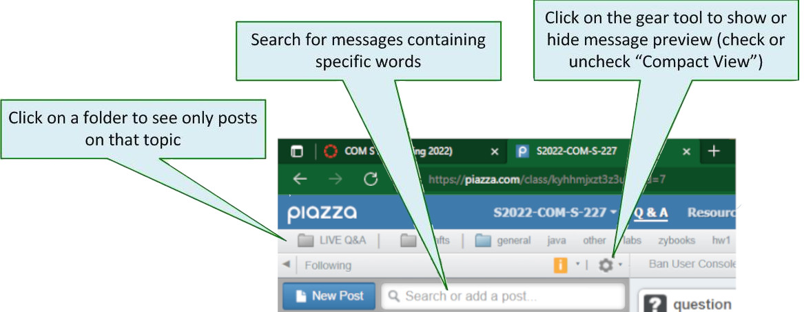
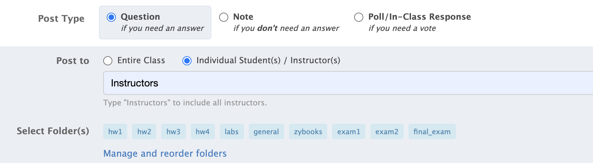

Getting Help in Com S 227
An important way of asking questions in a big course like this is to use an online discussion forum. We will be using a site called Piazza for this purpose. By posting your questions there, everyone can be involved and can benefit from the discussion. In many cases, you'll find that your question has already been answered.
If you have not already activated your Piazza account, please do so now: Log into Canvas and click the "Piazza" link in the navigation bar at left, or sign in with your ISU email address using https://piazza.com/iastate/spring2022/s2022coms227.
The most useful Piazza page is the Q & A page, where the discussions appear.

Folders
Discussion topics in Piazza are organized using special tags called folders. Here are the main folders we plan to use this semester: Whenever you post a question on Piazza, you'll be prompted to select one of the pre-defined folders for it. For example, here are the folders that we'll be using this semester:
general | General questions about the course |
zybooks | Questions about zyBook activities |
hw1, hw2, etc. | Questions about the assignments |
exam1, exam2, final_exam | Questions about the exams |
labs | Questions about the labs |
Searching
You can easily find all posts related to a folder topic by clicking on the folder name in the toolbar at the top of the Q & A page. You can also search for a specific word or phrase using the search box.Questions and followup discussions
If you can't find an answer to your question among the existing discussions, you can post a new question. Try to formulate a question clearly so that other people can recognize what you're asking.In other cases, you might find that your question is answered, but that there are still things that need clarification. In this case, you can start a followup discussion within that post.
You also might find that you can answer, or clarify the answer to, an existing question, in which case you can edit the collective student answer.
Private and anonymous posts
Please do not post personal information or source code for an assignment on on Piazza. If you really can't ask your question without including part of your source code, you can make the post private and type "Instructors" in the box, as shown below. Then it will be visible only to the instructors and TAs. You can also post anonymously.
Pro tip: Don't try to ask a question by following up on a very old post. Chances are, no one will ever see it! Just create a new post.
Turning off emails from Piazza
These can get annoying.- In the upper right corner of Piazza is a drop-down list next to your name. Select Account/Email settings.
- Under "Class and Email Settings", find Com S 227
- There is link called "Edit Email Notifications" in a small, blue font.
- Click on that link and edit.
Getting Help from ISU IT Services
The TAs will try to be helpful in resolving installation or computer problems, but they are not your IT staff. Very often, posting a detailed question on Piazza will bring the best responses, because there is a good chance someone else in the course has had the same problem. But ultimately, you bear responsibility for maintaining your own equipment. For general computer issues (i.e., not related to Java or Eclipse) you normally go to the ISU Solution Center.Checkpoint 1
- Show the TA that you can display just the posts in the
labsfolder on Piazza. - Show the TA that you can search for the posts containing the word "ugly".
- Demonstrate that you know the time of the last TA office hour at which you could have late checkpoints reviewed for credit.
- Explain to the TA what all the valid excuses are for missing a lab deadline.